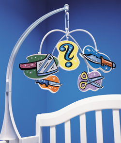

Is it still wise to circumcise?A procedure once done as a matter of course has suddenly become your first major parenting decisionI have two older brothers. They were married within a year of each another and, a few years later, prepared for the arrivals of their first children together. Ultrasound photos revealed tiny penises that through two trimesters brought the family nothing but joy. But then it came time for the little decisions expectant parents need to make, such as whether to cut off the skin at the end of the penis. One brother thought n nothing of this decision. Of course he would circumcise. He was an American, wasn't he? The other brother, though, did some research and decided that, despite the fact that circumcision had been the accepted practice in our gentile family for at least four generations, it was wrong -- our penises had been cruelly mutilated, and it wasn't going to happen to his son. Suffice it to say, there was somewhat less joy after that.
My family reflected a growing national debate. A practice that until recently was a nearly universal custom in this country, as pervasive as driving on the right side of the road, has become much more of an open question. Although the surgery is still a standard part of the hospital delivery process, 12 states have officially designated circumcision an elective procedure and eliminated Medicaid funding for it. In California and Maine, some private insurers followed Medicaid's lead, resulting in out-of-pocket costs of $100 to $500 that have led many parents to instruct doctors to skip the procedure altogether. And in a lawsuit that legal experts say could be a sign of things to come, a 19-year-old boy has settled with a New York hospital, claiming the staff never should have gone to his mother while she was still groggy from the anesthetic and asked her to consent to having a normal part of his body lopped off. In my self-appointed role as family referee, I clicked on some anticircumcision websites. I quickly learned that a quarter to a half of my penis's skin was removed shortly after birth, probably with very little or no anesthetic, and that some people liken this to having your lips or eyelids removed and then having to walk around with your gums or eyeballs exposed to the elements. Without the natural covering of the intact foreskin, nerves die and the glans, or head of the penis, gradually becomes calloused from all that chafing by coarse underwear. And that's counting only the nerves that are left: "40,000 nerve endings," by one website's count, follow the discarded prepuce into the trash. It was this last part, about a missing pleasure center, that finally caused me to put in a call to Marilyn Milos, director of the National Organization of Circumcision Information Resource Centers. (Get it? NOCIRC.) Shortly into our conversation, she asked me to tickle the back of my hand. Okay. "Now turn your hand over and do the same to your palm. Feel the difference?" she asked excitedly, as the tingling shot up my arm. "Those are the Meissner's corpuscles at work. Nowhere are they more concentrated than in the ring at the opening of the foreskin that rolls back during an erection." I thought for a moment about all that sensation formerly packed into my penis and now . . . gone. "Shit." "Yeah, I know," she said. While the U.S. is the only industrialized country that performs routine circumcision, the surgery goes back thousands of years. Egyptians likely did it for hygienic purposes: Removing the folds of foreskin prevented sand from getting in and causing irritation. Jews did it, and still do, because Abraham said that God said so. And 19th-century Americans started doing it because doctors said it would prevent masturbation. In 1888, when about 15 percent of the U.S. population was circumcised, Dr. John Harvey Kellogg, the cereal tycoon, wrote, "The operation should be performed by a surgeon without administering an anesthetic, as the pain attending the operation will have a salutary effect upon the mind, especially if it be connected with the idea of punishment." As prevalent a "problem" as masturbation was, however, circumcision didn't become widespread until after World War II, when more people were born in hospitals and the health-care system began searching for new sources of revenue. Freudian theories (which have largely fallen out of favor) about the importance of little boys sharing the same penis identifications as their fathers deepened the movement's hold throughout the sixties and seventies. By 1980, the circumcision rate in this country reached a peak of 85 percent. Ten years later, though, it had tailed off to 61 percent, and by 2001 is estimated to have been at 55 percent-- just five points above what groups like NOCIRC predict could be the circumcision tipping point. It's important to note, of course, that there are plenty of experts who insist there is a negligible difference in sensation between a circumcised and an uncircumcised penis. In fact, most of the debate goes this way, with one side saying something so completely opposite from the other that one wonders why there isn't hard scientific evidence to close the case. For instance, intactivists, as the anticircumcisers like to be called, make the claim that smegma, the goo produced by the inner mucosal membrane of an uncircumcised penis, performs a natural immunological function. The pro-circs, as they're known, come back with findings that smegma is not only not beneficial but is actually carcinogenic. One thing everyone agrees on is that smegma is a scary word and that the substance, if not cleaned out daily, stinks and will no doubt deter oral sex. Similar rifts swirl around urinary-tract infections and sexually transmitted diseases. There are other disputes, some more clear-cut than others. In the case of circumcision and pain, all doctors now agree that some type of anesthetic should be used and that infant pain, just a decade ago believed to be nonexistent or highly muted, is actually as vivid, or more so, than that of adults. (If going with the surgery, parents should ask for two shots each of ventral and dorsal Lidocaine to be administered at the base of the penis.) Then there are the medical risks inherent in any such routine surgery. Dr. George Denniston, president of Doctors Opposing Circumcision, says that more often than you'd like to believe, doctors clip off too much and that the result is a "buried penis," a penis head that just makes it out of the pelvic fat. Instances of actual botched surgeries are rare, however, and the calibrated clamps that doctors use make it difficult to overclip to a grotesque degree. Finally, there are the larger social issues of female preference and -- "What the hell is that?!"-- teasing. Poll after poll has shown that most American women prefer the streamlined penis. It looks better, they say. But it's also true that most of them were born before the big eighties numerical drop-off that has already made elementary and junior high school locker rooms much more foreskin-friendly. And as more people get used to seeing uncircumcised penises, women may find they like the turtlenecked, naturally lubed model even better. "Circumcision is not essential to a child's well-being at birth, even though it does have [potential] medical benefits," concluded a recent statement from the American Academy of Pediatrics, which has the feel of a bottom line on the subject. "These benefits are not compelling enough to warrant the AAP to recommend routine newborn circumcision." All the medical and social reasons for whether or not to perform a circumcision, in other words, are essentially a wash. And, increasingly, doctors are shifting the responsibility for weighing the pros and cons squarely onto parents. After the births of their two sons, my brothers buried the hatchet. Pictures of larvae and jokes about creative uses of leftover foreskin accompanied congratulatory remarks, and within months the two babies were sharing baths and yanking on each other's weenies like any loving cousins. Still, at one point I had to ask my pro-circ brother how, after being exposed to everything my intactivist brother fed him during their argument, he could circumcise his own son. "Look," he wrote me, "I was circumcised, and it was perfectly fine for me. Besides, we all remember the poor kid in high school who was uncircumcised. I didn't want my son to have another thing to worry about, even if only for the few years before the uncircumcised kids take over." I sent an e-mail out to both brothers declaring that, with a 50-50 world out there, both boys will be just fine. The brothers agreed. I signed off and took a moment to tickle my palms and pray that when my time comes, I'll have a baby girl. By: Ben Brashares Copyright © 2003 by Men's Journal LLC |
http://www.cirp.org/news/mensjournal2003/